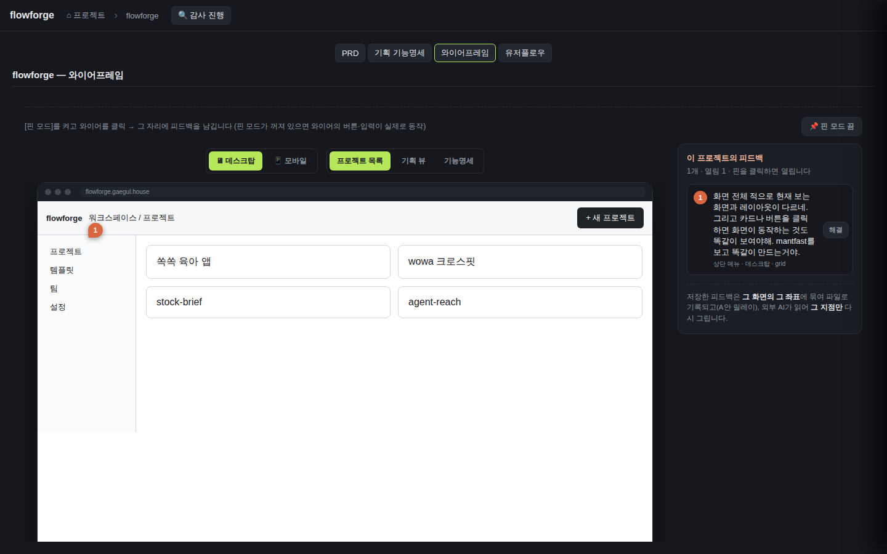
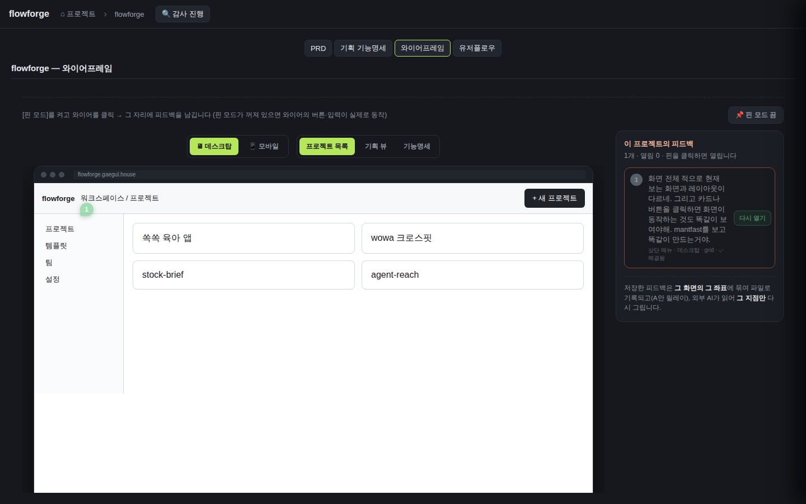
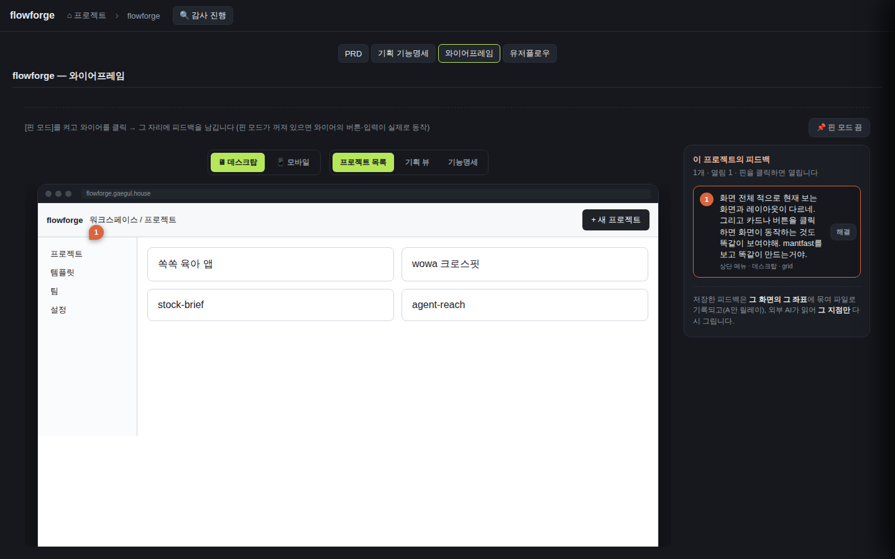

| 핀 피드백에 안정적 id와 status를 부여한다 | 새 핀 피드백에 id와 open status 부여 | server | POST append → 저장 레코드에 uuid id + status:"open" 부여(appendWireframeFeedback:340-349) | 격리 8913 POST {screenId:grid,text:'first pin'} → GET 확인 | ✓ PASS | POST→{ok:true} HTTP200; GET items[grid].id=5312468e-... status=open; 두번째 핀 append도 open |
| 핀 피드백에 안정적 id와 status를 부여한다 | id는 피드백마다 고유하다 | server | 같은 화면 2건 append → 서로 다른 id(genId=crypto.randomUUID) | 격리 8913 grid에 2건 append → id set 비교 | ✓ PASS | grid pins ids=[5312468e..., 234b279b...]; unique ids=True (2건 서로 다름) |
| 저장된 피드백을 GET으로 재조회해 표시한다 | 피드백 목록을 열면 저장된 핀들이 GET으로 로드된다 | web | 마운트 useEffect가 fetchWireframeFeedback(project)로 로컬 Pin을 시딩(WireframePinFeedback.tsx:318-331), 좌표에 핀 마커 렌더 | browse: 와이어 탭 진입 → '이 프로젝트의 피드백 1개·열림 1' + iframe에 핀 마커 '1' 표시 | ✓ PASS |  |
| 저장된 피드백을 GET으로 재조회해 표시한다 | 새로고침해도 핀이 유지된다 | web | GET 재조회가 로컬 useState<Pin[]> 소실을 대체 — 새로고침 후에도 표시 | browse: 전체 페이지 reload + 프로젝트 재진입 → 와이어 탭 재확인 | ✓ PASS |  |
| 저장된 피드백을 GET으로 재조회해 표시한다 | 빈 목록 | server | feedback 파일 없는 프로젝트 → GET 빈 배열, 크래시 없음(readFeedbackSidecar existsSync=false→[]) | 격리 8913 emptyproj GET | ✓ PASS | GET /emptyproj → {"project":"emptyproj","items":[]} HTTP200 (크래시 없음). 라이브 미존재 프로젝트는 resolveDocsDir null→404. |
| 핀을 resolve하면 상태가 resolved로 바뀐다 | 핀 resolve 시 status 변경 | web | PinList [해결] 버튼 → updateWireframeFeedback PATCH{status:resolved} → 로컬 status·resolved 스타일 반영(:279,:380-385) + 파일 in-place | browse 라이브: '해결' 클릭 전 GET status0=open → 클릭 후 GET status0=resolved, 패널 '열림 0'·'✓ 해결됨'·버튼 '다시 열기' | ✓ PASS |  |
| 핀을 resolve하면 상태가 resolved로 바뀐다 | resolved 핀을 다시 열기 | web | resolved 핀 재토글 → PATCH{status:open} → open 복귀(pin.status==='resolved'?'open':'resolved') | browse 라이브: '다시 열기' 클릭 → GET status0=open, 패널 '열림 1' | ✓ PASS |  |
| 핀을 resolve하면 상태가 resolved로 바뀐다 | 존재하지 않는 id를 resolve | server | 미존재 id PATCH → updateWireframeFeedback findIndex=-1 → {ok:false} → 라우트 404, 파일 불변 | 격리 8913 PATCH /does-not-exist-xyz {status:resolved} | ✓ PASS | PATCH nonexistent-id → HTTP404; 파일 len 3→3(불변, 손상 없음). 라우트/lib 테스트도 커버(97 PASS). |
| 피드백 수정은 중복 append가 아니라 in-place 갱신이다 | 기존 핀 수정 시 중복이 생기지 않는다 | server | 기존 핀 text PATCH → id 매칭 in-place 교체(배열 length 불변), append 아님(updateWireframeFeedback:376-386; web 저장분기 :388-395) | 격리 8913 PATCH {text:'EDITED first pin'} → len 비교 | ✓ PASS | PATCH{text} → len 3→3(중복 append 없음), text='EDITED first pin'. web 저장분기는 serverId 있으면 PATCH(:393). |
| 피드백 수정은 중복 append가 아니라 in-place 갱신이다 | in-place 갱신은 좌표를 보존한다 | server | text만 PATCH → id·screenId·xPct·yPct 보존({...current, text}만 갱신) | 격리 8913 text 수정 후 GET 좌표 확인 | ✓ PASS | 수정 후 xPct=30 yPct=40 screenId=grid 그대로, text만 변경. spread {...current,text}로 나머지 필드 보존. |
| id/status 없는 기존 레코드를 하위호환한다 | 구버전 레코드 읽기 | server | id/status 없는 레코드 GET → normalizeFeedback가 결정적 legacy id + status:open 주입(크래시 없음, wireDocs.ts:284-303) | 라이브 8812 flowforge(실제 구버전 레코드) + 격리 8913 legacy seed GET | ✓ PASS | 라이브 GET: id='legacy-0-2026-07-10T13:06:08.204Z-9.41...-9.71...' status='open' (id/status 없던 실 파일). 격리도 legacy-0-...-10-20 status=open. 결정적 파생. |
| id/status 없는 기존 레코드를 하위호환한다 | 구버전 레코드도 resolve할 수 있다 | server | 부여된 legacy id로 PATCH{status:resolved} → in-place 저장 | 격리 8913 legacy id로 resolve | ✓ PASS | PATCH legacy-0-...-10-20 {status:resolved} → HTTP200; GET legacy status=resolved. 파생 id로 지정·갱신 가능. |
| 동시 write에도 파일이 손상되지 않는다 | append 직후 resolve | server | append 직후 그 핀 resolve → read-modify-write로 최신 반영, 기존 레코드 유실 없음(각 write가 파일 재읽기, wireDocs.ts:354·376) | 격리 8913 skeleton append → 즉시 그 id resolve → 전체 GET 검증 | ✓ PASS | append(len 3→4) 직후 resolve → 새 핀 status=resolved; EDITED first pin·legacy 레코드 모두 존속(유실 0). read-modify-write 정합. |
{kind=link}
{kind=link}
{kind=link}